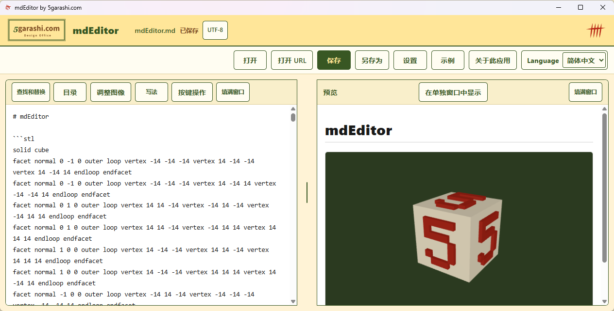

图表、3D、视频。
从一份 Markdown 文档开始。
新增简体中文界面、从剪贴板新建文档，并改善启动速度。
一边编写，一边实时预览。离线显示 Mermaid、Graphviz 和公式；旋转 3D、调整图片，导出 PDF、Word 或分享 ZIP。
剪贴板快捷键为可选设置，确认后才会创建快捷方式。启动时间取决于电脑环境。
从 Microsoft Store 免费获取
观看实际操作
从旋转的 3D 模型开始，从上到下浏览 diagram-test，再演示主要功能，包括拖放图片、设为正文宽度的 50% 并居中。
播放后有背景音乐，可暂停并调整音量。
Music: Light Steps — 5garashi.com Design Office / Codex, CC BY 4.0 (excerpt repeated, ending fade).
Sample film: Big Buck Bunny © 2008 Blender Foundation, CC BY 3.0. https://bigbuckbunny.org/
Maps: © OpenStreetMap contributors.
20 项主要功能
- 一边编写一边预览，两侧同步滚动
- 独立预览窗口，可移到第二台显示器
- 预览铺满窗口，作为阅读器使用
- 离线显示 Mermaid、Graphviz 图表和公式
- 用鼠标旋转 STL 3D 模型
- GeoJSON 地图；允许后加载 OpenStreetMap
- 约 40 种代码语言高亮，PDF、Word 保留颜色
- 从标题生成目录，再按一次即可更新
- GitHub 风格提示、前置元数据和折叠内容
- 在预览中直接播放文档视频
- 导出与预览效果一致的 PDF
- 打开 Word、HTML、邮件、CSV、JSON、Notebook 和图片
- 保存为 HTML、PNG、Word、CSV、JSON、Notebook、文本或分享 ZIP
- 拖放或粘贴图片，调整大小和居中位置
- 安全保存，意外退出后恢复自动备份
- 从复制的文字、图片或文件新建文档
- 网络图片、视频和地图仅在允许后加载
- 无广告、无跟踪、无需账号
- 支持键盘操作，自定义快捷键
- 屏幕阅读器、文档朗读和深色模式
图片大小与位置

仅支持 Windows。导入 Word 时不保留颜色和排版。网络图片、视频和详细地图仅在允许后加载。使用源代码构建版 1.0.15 录制。